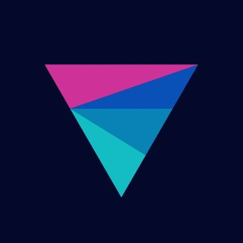

Spring 2026
Software Development Engineer Intern
AI agents for CloudWatch pipelines.
CS @ WaterlooCanada
Computer science at the University of Waterloo, with interests in distributed systems and AI tooling. Seeking 2027 SWE internships.
Software Development Engineer Intern
AI agents for CloudWatch pipelines.
Software Engineering Intern
Identity verification workflows on the Crypto as a Service team.
Software Engineering Intern
Onboarding workflows on the retailer growth pod.

Fall 2024Software Engineering Intern
Sports category pages and web speed.
Personal ML projects aimed at modeling sports markets—mostly learning in public.
Smaller tools and coursework live in repos; start here for code.